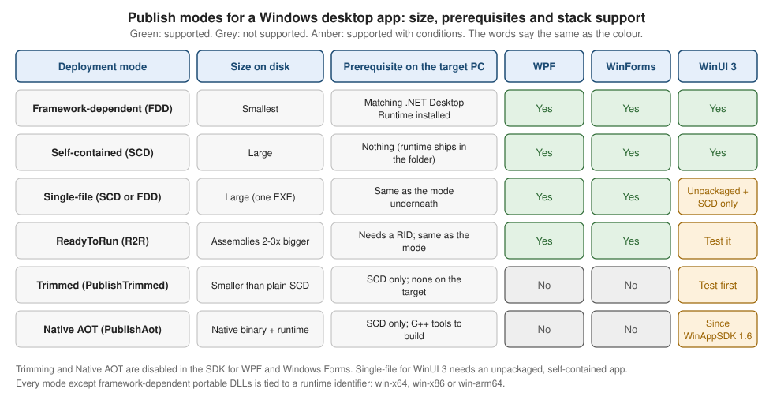

.NET Publishing Options
|
This content was generated with the assistance of AI and should be verified against the official documentation before being relied on in production. |
Writing the app is half of the job; the other half is deciding what leaves the build machine. A Windows desktop app
built with the .NET SDK can be published as a folder that needs the .NET runtime on the target PC, as a folder that
carries its own runtime, as one executable, as precompiled ("ReadyToRun") assemblies, trimmed, or compiled ahead of
time to native code. Each choice trades download size, start-up time, prerequisites and compatibility, and the
desktop stacks do not support the same set of choices. This page is the reference for those choices and for the
dotnet publish command that applies them. Wrapping the result in an MSIX package, signing it and putting it in front
of users is the job of the other publishing pages of this section: MSIX Packaging & Signing, Distribution Channels, Updates, Versioning & Telemetry and CI/CD with GitHub Actions (they are named here, not linked, because
they are written independently).
The page was written against these versions, current in October 2026:
-
.NET 10 LTS, latest patch 10.0.13, with C# 14. .NET 11 is at release candidate 2; general availability is expected 10 to 13 November 2026 and nothing here depends on a .NET 11 change. .NET 8 and .NET 9 both end support on 10 November 2026.
-
Visual Studio 2026 18.11.1 (its publish wizard writes the profiles described below).
-
Windows App SDK 2.5.1 for the WinUI 3 parts; the AOT statement dates from Windows App SDK 1.6.
-
CommunityToolkit.Mvvm 8.4.2 in the sample app; the toolkit does not change anything on this page.
-
Windows 11 and Windows 10. .NET 10 supports Windows 10 and Windows 11 on x64, x86 and Arm64.
The running example is Bookshelf Desktop: a Bookshelf.Desktop WPF project, a Bookshelf.Core class library with
IBookRepository, and the same screen re-implemented in WinUI 3 and in Windows Forms. The figure below summarizes the
whole page; the sections after it explain each row.

Publishing Is a Different Step from Building
dotnet build produces files that run on the developer machine, next to the SDK. dotnet publish produces the set
of files meant to be copied somewhere else. It compiles the application, reads its dependencies from the project file
and copies the result to a folder. The output contains:
-
the application assemblies (IL code in
.dllfiles) and, by default, a platform-specific launcher, the apphost (Bookshelf.Desktop.exe), -
a
.deps.jsonfile listing every dependency, -
a
.runtimeconfig.jsonfile naming the shared runtime the app expects and other runtime options, and -
the dependencies copied from the NuGet cache (and, for a self-contained app, the runtime itself).
Microsoft describes dotnet publish as the only officially supported way to prepare an application for deployment:
copying the bin\Release folder by hand skips steps such as copying the RID-specific native assets of NuGet packages.
The command and its options
| Option | Meaning |
|---|---|
|
Build configuration. With the .NET 8 SDK and later the default for |
|
Target runtime identifier, such as |
|
Bundle the .NET runtime with the app, or require it on the target machine. |
|
Shorthand that edits the current RID: on a |
|
Required when the project multi-targets. A desktop project normally has one target, such as |
|
Publish folder. By default |
|
Set any MSBuild property, for example |
|
Skip the implicit restore or build. After |
|
Apply a publish profile ( |
|
Send all build output to one folder tree (artifacts layout); pass it to every command in a pipeline. |
Two defaults deserve a sentence. First, framework-dependent output is the default mode of both the CLI and Visual
Studio. Second, PublishSingleFile implies a self-contained publish unless you say --no-self-contained; the
single-file section below returns to that.
# Framework-dependent, current machine's RID (the default mode)
dotnet publish src/Bookshelf.Desktop -c Release
# Self-contained for 64-bit Windows
dotnet publish src/Bookshelf.Desktop -c Release -r win-x64 --self-contained true -o publish/win-x64
# Same sources for an Arm64 PC (a Copilot+ laptop, for example)
dotnet publish src/Bookshelf.Desktop -c Release -r win-arm64 --self-contained true -o publish/win-arm64
# Print where the files went
Get-ChildItem publish/win-x64 | Select-Object -First 8 Name, LengthSource: dotnet publish
The Quick Reference of Modes
| Mode | Command |
|---|---|
Framework-dependent |
|
Framework-dependent, portable DLL only |
|
Self-contained |
|
Single-file |
|
ReadyToRun |
|
Native AOT |
|
Runtime Identifiers: win-x64, win-x86 and win-arm64
A runtime identifier (RID) names the operating system and processor an app targets. NuGet uses it to choose RID-specific assets (native libraries) from packages, and the SDK uses it to choose the apphost and, for a self-contained app, the runtime. For Windows there are three portable RIDs:
| RID | Machines | Notes |
|---|---|---|
|
64-bit Intel and AMD PCs. |
The default choice for new releases. |
|
32-bit processes. |
Needed only for a plugin host, a 32-bit native dependency or an old 32-bit-only machine. A 32-bit .NET Desktop Runtime is a separate install from the 64-bit one. |
|
Arm64 PCs. |
A native build avoids running through emulation. The Windows App SDK runtime installer exists in an |
Since .NET 8 the SDK uses only portable RIDs, those that are not tied to an operating-system version or a
distribution. Older version-specific values such as win10-x64 appear in older articles and templates (the single-project MSIX instructions of the Windows App SDK still reference a
win10-$(Platform).pubxml profile), but new code should use win-x64,
win-x86 and win-arm64. Do not parse a RID or build one in code unless you must; if you do, the casing must match
the catalog exactly.
Two project properties exist, and they mean different things:
| Property | Meaning |
|---|---|
|
One RID. Setting it makes |
|
A semicolon-separated list of RIDs the project can be restored for. It does not select one; it lets |
A practical consequence: a project that is published for several architectures lists them all in
RuntimeIdentifiers and chooses one per publish with -r. Publishing from a solution file with -r can produce
output without the RID-specific assets because the first compilation happens without that RID; publish the project
(not the solution) or list the RIDs in the project file.
<!-- Bookshelf.Desktop.csproj (WPF) -->
<Project Sdk="Microsoft.NET.Sdk">
<PropertyGroup>
<OutputType>WinExe</OutputType>
<TargetFramework>net10.0-windows</TargetFramework>
<UseWPF>true</UseWPF>
<Nullable>enable</Nullable>
<ImplicitUsings>enable</ImplicitUsings>
<!-- Which RIDs this project can be published for. -->
<RuntimeIdentifiers>win-x64;win-x86;win-arm64</RuntimeIdentifiers>
</PropertyGroup>
</Project>Publish Profiles
A publish profile is a .pubxml MSBuild file in Properties/PublishProfiles/ that stores the publish settings
under a name. Visual Studio creates one when you run Build > Publish (target Folder), and dotnet publish can
load it with -p:PublishProfile=<name>. MSBuild assumes the Properties/PublishProfiles folder and the .pubxml
extension, so pass only the name (PublishProfileFullPath takes a full path).
<!-- Properties/PublishProfiles/win-x64-selfcontained.pubxml -->
<Project>
<PropertyGroup>
<Configuration>Release</Configuration>
<Platform>Any CPU</Platform>
<PublishDir>bin\Release\net10.0-windows\publish\win-x64\</PublishDir>
<PublishProtocol>FileSystem</PublishProtocol>
<TargetFramework>net10.0-windows</TargetFramework>
<RuntimeIdentifier>win-x64</RuntimeIdentifier>
<SelfContained>true</SelfContained>
<PublishSingleFile>false</PublishSingleFile>
<PublishReadyToRun>true</PublishReadyToRun>
</PropertyGroup>
</Project>dotnet publish src/Bookshelf.Desktop -p:PublishProfile=win-x64-selfcontainedSource: dotnet publish (.pubxml files)
The command line honors only part of what Visual Studio stores in a profile. The documentation lists properties that
dotnet publish does not honor from a .pubxml file because they influence the build rather than the publish step:
Configuration, Platform, LastUsedBuildConfiguration, LastUsedPlatform, TargetFramework, TargetFrameworks,
RuntimeIdentifier and RuntimeIdentifiers. In the profile above, the lines for Configuration, Platform,
TargetFramework and RuntimeIdentifier therefore work in Visual Studio but are ignored by the CLI, so a CI script
using the profile must still pass -c Release -r win-x64. A profile also uses PublishDir for the CLI and
PublishUrl for Visual Studio; set both to the same value if the profile is used from both places.
Microsoft recommends keeping PublishReadyToRun, PublishSingleFile and PublishTrimmed in the project or profile
rather than on the command line, because they also change build-time analysis.
A good habit is one profile per distribution you ship: for Bookshelf Desktop, folder-fdd-x64, folder-scd-x64,
folder-scd-arm64 and onefile-scd-x64. The WinUI 3 templates add profiles under the same folder; the project-structure page of this section describes it.
Framework-Dependent versus Self-Contained
The first and most important choice is where the .NET runtime comes from.
| Framework-dependent (FDD) | Self-contained (SCD) | |
|---|---|---|
Output |
The app, its dependencies, the apphost. |
The same plus the whole .NET runtime and the framework assemblies. |
Size |
Small. |
Large (the runtime and the WPF or Windows Forms assemblies travel with every copy). |
Prerequisite |
The matching .NET Desktop Runtime must be installed (see below). |
None. The target PC needs no .NET installation. |
Runtime updates |
The app rolls forward to the latest patch of its major version installed on the machine, so security patches arrive through Microsoft Update or the user’s package manager. |
The app keeps the runtime it shipped with; a security fix means releasing a new build. |
Behavior drift |
A newer runtime on the machine can change behavior slightly. |
Fully controlled by the developer. |
Typical use |
Corporate PCs that standardize on a runtime; installers that include a prerequisite check. |
Consumer downloads, portable zip files, locked-down PCs, side-by-side copies of different versions. |
Framework-dependent publishing creates an app that automatically rolls forward to the latest .NET security patch installed on the machine. A self-contained app does not roll forward. Microsoft’s own advice for self-contained apps: you control the version, but updating the runtime means shipping the app again.
Where the apphost looks for .NET
A framework-dependent app starts through the apphost (Bookshelf.Desktop.exe), which finds a globally installed
runtime. Starting an app through dotnet Bookshelf.Desktop.dll is also possible, but the apphost has advantages: the
file appears as a normal executable with its own process name, a native manifest can be attached to it, and it gets
low-level security mitigations (for example Control-flow Enforcement Technology shadow stack, enabled by default
starting with .NET 9).
The search can be customized:
-
DOTNET_ROOTpoints one execution to a runtime in a custom folder. Clear any variable that starts withDOTNET_ROOTfirst, set onlyDOTNET_ROOT, then run the apphost. -
In .NET 9 and later,
AppHostDotNetSearchconfigures where the published executable looks (AppLocal,AppRelative,EnvironmentVariableorGlobal), andAppHostRelativeDotNetgives the relative path used byAppRelative. That lets an installer place a private runtime in a sub-folder without setting machine-wide variables.
<PropertyGroup>
<SelfContained>false</SelfContained>
<!-- Look next to the app first, then in the registered global install. -->
<AppHostDotNetSearch>AppLocal;Global</AppHostDotNetSearch>
</PropertyGroup>The .NET Desktop Runtime Prerequisite
A framework-dependent WPF or Windows Forms app needs the .NET Desktop Runtime, not just the base ".NET Runtime". On Windows there are three runtimes, and each installer includes a different set:
| Installer | .NET Runtime | .NET Desktop Runtime | ASP.NET Core Runtime |
|---|---|---|---|
.NET Runtime |
Yes |
No |
No |
.NET Desktop Runtime |
Yes |
Yes |
No |
ASP.NET Core Runtime |
No |
No |
Yes |
.NET SDK |
Yes |
Yes |
Yes |
The Desktop Runtime is what contains WPF and Windows Forms, so it is the prerequisite for the Bookshelf Desktop WPF and
WinForms builds (a WinUI 3 app needs the Windows App SDK runtime as well, covered later). The runtime installed must be
the same major version the app targets (.NET 10 for net10.0-windows) and the same architecture as the app
(a 32-bit app needs the x86 runtime even on a 64-bit PC). Windows 11 and Windows 10 both run .NET 10 on x64, x86 and
Arm64; Windows 8.1 and Windows 7 are not supported by any supported .NET version.
| How the user gets it | Details |
|---|---|
.NET installer ( |
Download page installs system-wide and needs administrative rights. Silent flags: |
WinGet |
|
|
|
Bundled with your installer |
Chain the runtime installer as a prerequisite in a setup program (WiX bundle, Inno Setup and similar). |
Visual Studio or the SDK |
Developers already have it; an SDK install includes all three runtimes. |
The .NET installers can be serviced by Microsoft Update, install side by side across major and minor releases and
architectures, and (since .NET 8.0.11) honor a RemovePreviousVersion registry value (always, never or
nextSession) that controls when the older runtime is removed. Windows 7, Windows 8.1 and Windows Server 2012 builds
need the Visual C++ redistributable; a missing hostfxr.dll or api-ms-win-crt-runtime-l1-1-0.dll is the typical
symptom on such machines.
# prerequisite-check.ps1 -- exit 0 when a .NET 10 Desktop Runtime is installed
$runtimes = & dotnet --list-runtimes 2>$null
if ($runtimes -match 'Microsoft\.WindowsDesktop\.App 10\.') {
Write-Host 'Microsoft.WindowsDesktop.App 10.x found.'
exit 0
}
Write-Host 'Missing .NET 10 Desktop Runtime. Installing with WinGet...'
winget install --id Microsoft.DotNet.DesktopRuntime.10 --exact --silent `
--accept-package-agreements --accept-source-agreements
exit $LASTEXITCODESource: Install .NET on Windows
A user with only the apphost and no runtime sees a dialog from the apphost offering a download link; for a managed rollout, check the prerequisite in the installer rather than relying on that dialog.
Single-File Deployment
PublishSingleFile bundles the app’s dependency files into one executable. It works for framework-dependent and
self-contained apps, is always specific to one OS and architecture, and can be combined with ReadyToRun and
trimming. The *.runtimeconfig.json and *.deps.json files are included in the bundle.
<PropertyGroup>
<OutputType>WinExe</OutputType>
<TargetFramework>net10.0-windows</TargetFramework>
<UseWPF>true</UseWPF>
<RuntimeIdentifier>win-x64</RuntimeIdentifier>
<SelfContained>true</SelfContained>
<PublishSingleFile>true</PublishSingleFile>
</PropertyGroup>| Property | Effect |
|---|---|
|
Enables single-file publish and the single-file analyzer warnings during build. Set it in the project file, not only on the command line. |
|
Selects self-contained or framework-dependent output. The |
|
The target. A single-file app has to be built for a specific RID. Since the .NET 8 SDK a RID does not imply |
|
Embeds the runtime’s native binaries in the bundle for extraction, so you get one output file (see below). |
|
Extracts all files, managed assemblies included, before the app runs. A .NET Core 3.1 compatibility mode that Microsoft does not recommend and may remove. |
|
Compresses the embedded assemblies; costs start-up time. |
|
Embeds the PDB of your assemblies in the |
|
Keeps a file next to the executable instead of inside the bundle. |
Native libraries
Only managed DLLs are bundled by default. When the app starts they are loaded from the bundle in memory, but the
native binaries of the runtime itself stay as separate files beside the executable. To embed them as well, set
IncludeNativeLibrariesForSelfExtract to true. The price is extraction: the native files are written to disk
before the app starts, to a directory under the path in the DOTNET_BUNDLE_EXTRACT_BASE_DIR environment variable if
it is set, and otherwise under %TEMP%\.net on Windows. To prevent tampering, that directory must not be writable by
users or services with different privileges.
A WPF app also depends on native helper libraries that ship with the desktop framework, which is why a WPF single-file
build still shows a few .dll files unless the property above is set (the exact file names depend on the release and
are not listed here).
Embedded symbols and compression
A single-file app keeps its .pdb files beside the executable by default. Setting DebugType to embedded in the
project puts the symbols in the assembly instead, which makes stack traces carry line numbers without an extra file.
That is the setting the Price chapter shows, and it is the one to keep in mind for crash reports.
EnableCompressionInSingleFile compresses the embedded assemblies, which can shrink the executable a lot, but the
assemblies must be decompressed into memory at start-up. Measure both the size change and the start-up cost; the
effect differs between applications.
<!-- Bookshelf.Desktop.csproj -- one portable EXE for 64-bit Windows -->
<Project Sdk="Microsoft.NET.Sdk">
<PropertyGroup>
<OutputType>WinExe</OutputType>
<TargetFramework>net10.0-windows</TargetFramework>
<UseWPF>true</UseWPF>
<Nullable>enable</Nullable>
<RuntimeIdentifier>win-x64</RuntimeIdentifier>
<SelfContained>true</SelfContained>
<PublishSingleFile>true</PublishSingleFile>
<IncludeNativeLibrariesForSelfExtract>true</IncludeNativeLibrariesForSelfExtract>
<EnableCompressionInSingleFile>true</EnableCompressionInSingleFile>
<DebugType>embedded</DebugType>
<!-- Keep only the satellite languages the app really ships. -->
<SatelliteResourceLanguages>en;es</SatelliteResourceLanguages>
</PropertyGroup>
</Project>(SatelliteResourceLanguages is a general SDK property that limits which localized resource folders of dependencies
are copied; it is not part of the single-file article.)
Single-file pitfalls
-
File-path APIs. In a single-file app
Assembly.Locationreturns an empty string andAssembly.CodeBasethrowsPlatformNotSupportedException. UseAppContext.BaseDirectoryfor files next to the executable andEnvironment.ProcessPathfor the executable path. Third-party libraries that load files by path can break. -
Managed C++ components are not well suited for single-file deployment.
-
Plug-ins kept as separate DLLs must be marked with
ExcludeFromSingleFileso they stay next to the app. -
Signing before bundling: the SDK has an extension point (the
PrepareForBundletarget runs beforeGenerateSingleFileBundle, andFilesToBundlelists the files) for tools that must modify the binaries first. -
Self-extraction and security: the extraction directory must not be writable by other principals.
using System.IO;
namespace Bookshelf.Desktop.Services;
public static class AppPaths
{
// Works for folder deployments and single-file bundles alike.
public static string SeedDataFile =>
Path.Combine(AppContext.BaseDirectory, "Data", "seed-books.json");
// Assembly.GetExecutingAssembly().Location is "" in a single-file app.
public static string ExecutablePath => Environment.ProcessPath ?? string.Empty;
}Source: Single-file: API incompatibility
ReadyToRun (R2R)
ReadyToRun precompiles the assemblies to native code in addition to IL, which reduces the work the just-in-time (JIT) compiler does during start-up and the first use of each feature. It matters for desktop apps because a window shows up only after a lot of code has run once: XAML loading, binding, styles. R2R is a form of ahead-of-time compilation, but it is not Native AOT: the IL stays in the file and the JIT can still run.
| Aspect | Detail |
|---|---|
Switch |
|
RID |
Required. R2R is only available when publishing for a specific runtime such as |
Which assemblies |
Those distributed with the app. For a self-contained app that includes the framework assemblies. C++/CLI binaries are not eligible. |
Size |
An assembly typically grows to two to three times its size (it holds IL and native code). |
Gain |
Large code bases benefit most. Small apps gain little because the runtime libraries are already precompiled. |
Tiering |
R2R code is less optimized than JIT output; tiered compilation replaces hot R2R methods with JIT code. |
Composite |
|
Cross-compiling |
A Windows x64 machine can produce R2R images for Windows x86, x64 and Arm64 (and Linux and macOS) for .NET 6 and later. |
Symbols |
|
Warnings |
|
R2R is supported on WPF and Windows Forms projects as part of the normal desktop SDKs, and it combines with framework-dependent, self-contained and single-file publishing. For WinUI 3 it follows the same .NET rules; test the published output because WinUI relies on generated projection code.
dotnet publish src/Bookshelf.Desktop -c Release -r win-x64 --self-contained true `
-p:PublishReadyToRun=true -p:PublishReadyToRunEmitSymbols=true -o publish/win-x64-r2rSource: ReadyToRun deployment overview
Trimming
Trimming removes the parts of the framework and of your dependencies that a static analysis cannot find a use for,
which can shrink a self-contained app a lot. PublishTrimmed is only available to self-contained apps and is
analyzed at build time, so a code pattern the analyzer cannot follow produces a warning. Reflection is the usual
cause: serializers such as Newtonsoft.Json, Assembly.LoadFrom plug-in loading, System.Reflection.Emit, and
built-in COM marshalling are all trimming-incompatible.
<PropertyGroup>
<SelfContained>true</SelfContained>
<PublishTrimmed>true</PublishTrimmed>
</PropertyGroup>The trim mode (TrimMode: partial trims only assemblies that opted in, full trims every assembly) exists since
.NET 6, and the Price chapter shows TrimMode partial as the safer way to try trimming. The page about trimming
describes PublishTrimmed with a self-contained RID publish such as dotnet publish -r win-x64 -p:PublishTrimmed=true.
Which mode is the default in your SDK is not stated in the pages cited here, so set TrimMode explicitly when you
use trimming.
Why trimming is off for WPF and Windows Forms
| Stack | Trimming status |
|---|---|
WPF |
Not supported. WPF "makes substantial use of reflection and some features are heavily reliant on runtime code inspection", so trimming analysis cannot preserve all necessary code, almost no WPF app runs after trimming, and the .NET SDK disables it. Setting |
Windows Forms |
Not supported. WinForms uses little reflection but depends heavily on built-in COM marshalling; almost no app runs without it, so the SDK disables trimming. Progress is tracked in dotnet/winforms issue 4649. |
WinUI 3 |
Supported with work: see the next sections. Microsoft’s single-instancing guidance warns that trimmed release builds have known crashes in some cases, so test any trimmed WinUI output thoroughly. |
Source: Known trimming incompatibilities
Native AOT
Native AOT compiles the whole app to native code at publish time: no JIT at run time, a faster start and a smaller
memory footprint, and no installed runtime needed. It is a self-contained mode that implies trimming and single-file
publishing. The cost is a long list of limitations: no dynamic loading (Assembly.LoadFile), no runtime code
generation (System.Reflection.Emit), no C++/CLI, no built-in COM on Windows, interpreted System.Linq.Expressions,
and many reflection-based libraries that need source generators. On Windows, building needs Visual Studio with the
"Desktop development with C++" workload (all default components). Windows supports x64, Arm64 and (since .NET 9) x86
as compilation targets.
<PropertyGroup>
<PublishAot>true</PublishAot>
</PropertyGroup>PublishAot belongs in the project file, because it also turns on analysis during build and editing. The publish
command is the same RID publish: dotnet publish -r win-x64 -c Release. By default the debug information goes to a
separate .pdb file next to the native binary, which you need for debugging and crash dumps.
Source: Native AOT deployment overview
The Support Matrix per Desktop Stack
| Capability | WPF | Windows Forms | WinUI 3 (Windows App SDK) |
|---|---|---|---|
Framework-dependent (FDD) |
Yes |
Yes |
Yes (default; runtime is the Windows App SDK framework) |
Self-contained (SCD) |
Yes |
Yes |
Yes (set |
Single-file ( |
Yes |
Yes |
Only for an unpackaged, self-contained app (Windows App SDK 1.5 and later); not for packaged or framework-dependent apps |
ReadyToRun |
Yes |
Yes |
Follows .NET rules; test the output |
|
No (NETSDK1168) |
No |
Possible with extra work; known crash reports |
Native AOT ( |
No |
No |
Yes, since Windows App SDK 1.6 (with CsWinRT 2.1.1 or later in that release) |
For WinUI 3 the AOT announcement of Windows App SDK 1.6 says the PublishAot property is now supported, that AOT builds
on trimming support, that the app needs a package reference to Microsoft.Windows.CsWinRT 2.1.1 or later in that
release (until a .NET SDK servicing update made it unnecessary), and that the developer is responsible for rooting
types that are reached only through reflection, such as the targets of reflection-based {Binding}. Classes that
must be analyzed by the C#/WinRT source generator have to be declared partial. x:Bind is therefore the AOT-friendly
choice for a WinUI view, as the data-binding pages of this section explain.
Windows App SDK Deployment: Framework-Dependent or Self-Contained
A WinUI 3 app has a second runtime besides .NET: the Windows App SDK. A Windows App SDK project is framework-dependent by default, so the machine needs the Windows App SDK runtime packages (framework, main, singleton and the dynamic dependency lifetime manager).
| App kind | Framework-dependent (default) | Self-contained |
|---|---|---|
Packaged (MSIX) |
The manifest declares a dependency on the Windows App SDK framework package; installing the app brings it in. For packaged apps not distributed through the Store you are responsible for distributing the framework package, and calling the Deployment API ( |
The Windows App SDK files are included as content inside the MSIX package. |
Packaged with external location or unpackaged |
You install the runtime with the Windows App SDK installer ( |
The Windows App SDK files are copied next to the executable in the output; xcopy them or include them in an installer. |
Self-contained Windows App SDK deployment is one property in an app project (not in a library):
<!-- Bookshelf.Desktop.WinUI.csproj -- unpackaged, fully self-contained -->
<PropertyGroup>
<OutputType>WinExe</OutputType>
<TargetFramework>net10.0-windows10.0.19041.0</TargetFramework>
<UseWinUI>true</UseWinUI>
<WindowsPackageType>None</WindowsPackageType>
<RuntimeIdentifier>win-x64</RuntimeIdentifier>
<!-- The Windows App SDK files travel with the app. -->
<WindowsAppSDKSelfContained>true</WindowsAppSDKSelfContained>
<!-- .NET must be self-contained as well to be fully self-contained. -->
<SelfContained>true</SelfContained>
</PropertyGroup>Notes from the same guide: a self-contained app extracts the contents of the Windows App SDK framework package into
the build output; library projects should not be switched; a C++ app also needs the hybrid CRT; and the few APIs that
depend on extra MSIX packages (push notifications need the Singleton package) either need the package deployed with
the app, a run-time IsSupported check, or should be avoided. WindowsAppSdkUndockedRegFreeWinRTInitialize
defaults to true for an executable that is self-contained and unpackaged, because that combination needs
registration-free WinRT.
A framework-dependent unpackaged install is silent with WindowsAppRuntimeInstall.exe --quiet; --force replaces
the MSIX packages and shuts down running Windows App SDK processes. Common return codes are 0x0 (success),
0x80073d06 (a package failed to install) and 0x80070005 (a system-wide install without elevation). Without
administrator rights the installer registers the packages for the current user only; elevated, it provisions them for
all users.
# Chain the Windows App SDK runtime installer before the first launch
.\WindowsAppRuntimeInstall-x64.exe --quiet
if ($LASTEXITCODE -ne 0) { Write-Error "Windows App SDK runtime failed: $LASTEXITCODE" }WinUI single-file
WinUI 3 single-file publishing is a narrow case. The unpackaged-distribution guide says unpackaged, self-contained
WinUI 3 apps support PublishSingleFile (Windows App SDK 1.5 and later), that it is not supported for packaged apps
or framework-dependent apps, and that dependencies are extracted to a temporary directory at first launch, so it is
not a zero-extraction binary. Required properties:
<PropertyGroup>
<WindowsPackageType>None</WindowsPackageType>
<WindowsAppSDKSelfContained>true</WindowsAppSDKSelfContained>
<SelfContained>true</SelfContained>
<EnableMsixTooling>true</EnableMsixTooling>
<IncludeAllContentForSelfExtract>true</IncludeAllContentForSelfExtract>
<PublishSingleFile>true</PublishSingleFile>
</PropertyGroup>The build validates this configuration: it fails if EnableMsixTooling, WindowsPackageType set to None, or
IncludeAllContentForSelfExtract is missing, and warns if WindowsAppSDKSelfContained or SelfContained is absent.
If you opt out of the auto-initializer, set the MICROSOFT_WINDOWSAPPRUNTIME_BASE_DIRECTORY environment variable to
AppContext.BaseDirectory before program entry. If extraction is unacceptable, the guide suggests MSIX packaging, a
traditional installer such as WiX or Inno Setup, or WPF or Windows Forms instead.
Another Microsoft page on self-contained deployment states that dotnet publish bundles managed assemblies but
cannot produce a single-file EXE for WinUI 3 apps because the native runtime dependencies must remain separate files.
The two statements describe the same limit from two angles: do not expect a clean single file with no files beside
it; expect a self-extracting bundle in the unpackaged-and-self-contained case, and no bundle at all in the others.
Choosing a Mode for Bookshelf Desktop
| Scenario | Recommended publish | Why |
|---|---|---|
Internal tool on managed PCs that already deploy the Desktop Runtime |
Framework-dependent, |
Smallest download; patches come from the runtime. |
Public download from a website |
Self-contained, |
No prerequisite for the user; one file per architecture is easy to explain. |
Portable zip for USB sticks or locked-down PCs |
Self-contained single-file with native libraries embedded |
One file; remember the extraction directory. |
WinUI 3 version, Store or MSIX |
Packaged, framework-dependent or self-contained Windows App SDK |
Package identity, update channels; the other pages cover signing. |
WinUI 3 version, direct download |
Unpackaged, |
No two-runtime prerequisite. |
Smallest start-up for a WinUI 3 utility |
Native AOT after fixing trim and reflection warnings |
Only stack that supports it among the three. |
A repeatable script keeps the publish folders for each architecture consistent:
param([string]$Version = '1.0.0')
$project = 'src/Bookshelf.Desktop'
foreach ($rid in 'win-x64', 'win-x86', 'win-arm64') {
$out = "artifacts/$rid"
dotnet publish $project -c Release -r $rid --self-contained true `
-p:PublishReadyToRun=true -p:Version=$Version -o $out
if ($LASTEXITCODE -ne 0) { throw "Publish failed for $rid" }
Compress-Archive -Path "$out/*" -DestinationPath "artifacts/Bookshelf-$Version-$rid.zip" -Force
}Source: dotnet publish
What Changed Across Versions
| Version | Change that matters when publishing |
|---|---|
.NET Framework |
No publish step: build output plus ClickOnce or an MSI. The runtime was part of Windows. See the page on migrating from .NET Framework. |
.NET Core 3.0 / 3.1 |
WPF and Windows Forms on .NET; framework-dependent executables, single-file bundles (extracting). |
.NET 5 / 6 |
Trimming fully supported from .NET 6 (experimental in .NET Core 3.1 and .NET 5); composite ReadyToRun added in .NET 6. |
.NET 7 |
Native AOT introduced. |
.NET 8 |
|
.NET 9 |
|
.NET 10 |
LTS; file-based apps can be published with |
Windows App SDK 1.5 / 1.6 |
Single-file for unpackaged self-contained (1.5); |
Windows App SDK 2.0 |
SemVer versioning; NuGet version equals the SDK version. |
Price Chapter 7 Mapped to Desktop Apps
Mark J. Price’s C# 13 and .NET 9 (Packt, 2024), chapter 7, "Packaging and Distributing .NET Types", is the book chapter this page maps to. The book does not cover WPF, Windows Forms or WinUI 3 (it points to Microsoft’s Windows documentation for those on p. 647), but its publishing material applies to desktop projects with the exceptions below. Page numbers are PDF indices.
| Book topic (pages) | Book content | Desktop reading |
|---|---|---|
|
Installing optional workloads from the command line. |
Windows desktop development comes from the Visual Studio workload or the Windows target in the SDK; WinUI adds the Windows App SDK NuGet package, not a |
Publishing desktop apps (p. 414) |
Windows Forms and WPF projects publish like console apps, but only for Windows. |
Same commands, with a |
|
One file, with symbols embedded. |
Covered above; add |
|
Trimming and the partial mode. |
Not available for WPF or Windows Forms; possible with care for WinUI 3. |
Native AOT (pp. 419-420) |
AOT publishing and its limits. |
Not available for WPF or Windows Forms; WinUI 3 since Windows App SDK 1.6. |
Tidjani Belmansour’s Building CLI Applications with C# and .NET (Packt, 2025) also uses single-file publishing as
the way to hand a CLI to users (pp. 232 and 240, in the chapter that packages tools for WinGet). The same
PublishSingleFile setting applies to a desktop executable, but a GUI app needs the extra self-extraction and
IncludeNativeLibrariesForSelfExtract considerations because it carries native UI libraries.
Pitfalls
-
Publishing from a solution with
-rand-o: output of all projects lands in one folder or the RID assets are missing. Publish the project, or setPublishDirper project. -
RuntimeIdentifierin a.pubxmlworks in Visual Studio but is ignored bydotnet publish; pass-rin CI. -
PublishTrimmedon a WPF or WinForms project: the SDK stops the build (WPF reports NETSDK1168); do not look for a workaround, shrink the app with compression,SatelliteResourceLanguagesand R2R choices instead. -
Forgetting the architecture of the runtime: an x86 app needs the x86 Desktop Runtime even on 64-bit Windows.
-
Installing the wrong runtime: ".NET Runtime" alone does not run a WPF or Windows Forms app.
-
Single-file and file paths:
Assembly.Locationis empty; read settings from the user’s profile, not from the executable folder (see the local-data page of this section). -
Extraction directory: self-extracting apps write to
%TEMP%\.net; make sure a service or elevated process does not share a writable directory with other users. -
Mixing
--no-buildwith a different mode than the build used. -
Self-contained apps do not get runtime security fixes: schedule a rebuild when .NET servicing releases ship.
-
WinUI 3 single-file without
WindowsPackageTypeset toNone: the build reports errors; packaged and framework-dependent apps cannot usePublishSingleFile. -
Enabling
PublishAoton WPF or Windows Forms is not supported. Evaluate WinUI 3 or a different workload if Native AOT is a requirement. -
Conflicting statements about WinUI single-file: two Microsoft pages word the limit differently, so test the published output on a clean virtual machine before promising a single file.
Summary
Choose the publish mode by the target machine: framework-dependent when a managed fleet carries the .NET Desktop
Runtime, self-contained when it must run anywhere. Always publish for an explicit RID (win-x64, win-x86 or
win-arm64) and keep one profile per shipped flavor, remembering the CLI ignores the RID and configuration inside a
.pubxml. Use ReadyToRun to improve start-up on all desktop stacks, single-file with embedded native libraries when
one executable is worth a self-extracting start, and keep trimming and Native AOT to WinUI 3, where PublishAot has
worked since Windows App SDK 1.6; WPF and Windows Forms are blocked by the SDK. For WinUI 3, remember there are two
runtimes to ship (.NET and the Windows App SDK), and that single-file means unpackaged and self-contained.
References
-
Deployment guide for apps packaged with external location or unpackaged
-
Mark J. Price, C# 13 and .NET 9 — Modern Cross-Platform Development Fundamentals, Packt, 2024, chapter 7: https://www.packtpub.com/en-us/product/c-13-and-net-9-modern-cross-platform-development-fundamentals-9781835881224
-
Tidjani Belmansour, Building CLI Applications with C# and .NET, Packt, 2025: https://www.packtpub.com/en-us/product/building-cli-applications-with-c-and-net-9781835882740